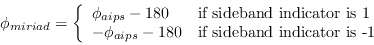

Determining Gains and Polarimetric Properties - GPCAL
Task gpcal
is the main workhorse of the Miriad calibration
system, although it is only particularly useful if you have measured
all four polarisation products (XX, YY, XY and YX). It has
a plethora of options to turn on and off various solvers. Most of these
will be irrelevant to normal use - particularly when calibrating a
source, such as 1934-638, which is known to be unpolarised. However it
does not determine a bandpass function. So, if you have not averaged
you data into a channel-0 dataset, you should precede gpcal
with
mfcal
- gpcal
will normally apply any bandpass function
it finds with the dataset before it performs it real work.
Do not be intimidated by the number of options - we
give you advice on which ones to use in the following chapter. We now discuss
the various inputs.
- vis: The input dataset.
- line can be used to select the range of channels, and the
averaging to be performed on a multi-channel dataset. See Section 5.4
for more information. Generally you should not specify any
averaging. Task gpcal
performs its own averaging in a fashion which
gives best results.
- interval: This interval parameter has the same meaning
as that described in Section 11.4 above, and the advice for setting
it is the same.
- flux gives the values of the four Stokes parameters for
your calibrator source. If you choose to solve for Q and U, (see
options below) then these are initial guesses only - it is not
necessary to give them accurately, or at all, in this case.
Make sure you get the
signs of Q, U and V right; these are real numbers, not visibility
amplitudes. Note that gpcal
does recognise a small group of
calibrators for which it knows the spectrum in I, and sometimes Q
and U - see the help file for details. The primary calibrator
1934-638 is amongst these. If gpcal
does not
recognise the source, the default is an unpolarised source. This will
be quite inappropriate if you have a polarised source and do not solve
for Q and U. If no flux density is given, and the source is not known, then
gpcal
assumes that the rms gain amplitudes are 1 - and determines
the calibrator flux density accordingly. This will be a good approximation
if you equalised the gains at the start of the observation
(which is the normal practise). However, at this stage, this approximation
is largely a convenience - any error in the assumption will be corrected later.
- tol: The iterative procedure converges when the solutions
are unchanged from the previous solutions by an amount tol. The
default is 0.001. Make this smaller if you want more iterations.
- xyphase:
This parameter is an
artifact of history - it can be ignored when following the current
recommended procedure for calibrating ATCA data.
This parameter can be used as an
alternative way of specifying
the XY phase of the antennas.
If the XY phase on the reference antenna is constant to
good approximation, and provided you have not already applied
any XY phase correction (i.e. neither in AIPS or Miriad atlod
nor with
atxy), then you can give the XY phases of the antennas here.
Unless you explicitly turn off solving for XY phase in gpcal, then
the only important XY phase value is that for the reference antenna.
All the same you should give values for all antennas.
One significant catch (for arcane reasons) is that the
XY phase reported by AIPS is not the XY phase used by Miriad.
They are related by:

The value of the sideband indicator is noted
in the history generated by ATLOD. More simply,
however, it will also be the sign of the frequency increment.
- options controls what gpcal
solves for. Several
options, separated by commas, can be given. It is important that you
understand the different choices.
- oldflux
- If you are calibrated data that are to be combined
or compared with ATCA data reduced before August 1994, you will generally
want to use the `oldflux' option to select the pre-August 1994 ATCA
flux scale. See Section 12.6 for more information.
- qusolve
- means that gpcal
will solve for Q and U,
taking the model you gave in flux as a starting point. You need
many cuts of the calibrator with good parallactic angle coverage to do
this successfully. You should not attempt to solve for Q and U of
the primary, as you will invariably have too little data. Additionally
1934-638 is known to be unpolarised.
- xyvary:
- If the telescope settings are not altered, the XY phases
(which are purely instrumental) appear to remain constant to better than
a few degrees.
By default, gpcal
assumes the XY phases are constant. Because of the
reliability of the XY phase measurement system, this assumption is now
known to be inappropriate. It is better to let gpcal
solve for
the XY phases as a function of time - use option xyvary for this.
Note that gpcal
can do this for
all antennas except the reference antenna - the reference antenna
is assumed to be constant and (generally) zero.
- xyref
- means that gpcal
will solve for the XY phase of the
reference antenna. To do this, the source must be strongly polarised.
- noxy
- means that gpcal
will not solve for any XY phases.
By default it solves for all XY phases, except for the
reference antenna. This is generally not an appropriate switch to use.
- polref
- means that gpcal
solves for all the leakage
parameters of the reference antenna. By default it does
not attempt to solve for the misalignment and ellipticity of the X
feed of the reference antenna. It is only possible to use this option
if the source is strongly polarised (at least 5%). If you specify Q
and U, both these terms can be found. However, if you ask for the
qusolve option, then the misalignment term cannot be determined.
- nopol
- means that gpcal
does not solve for the polarisation
leakage terms. You must use this option if you are calibrating
data without XY or YX correlations.
- noamphase
- means that gpcal
does not solve for the antenna
gains. This option is rarely useful.
Miriad manager
2016-06-21